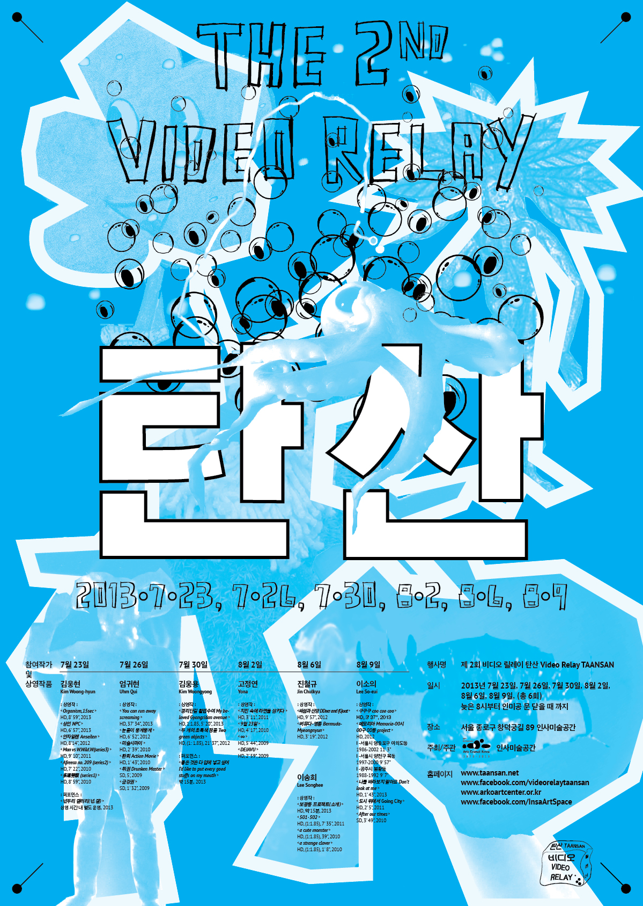

- 2013. 8. 6. 20:00
- 인사미술공간 Insa Art Space
- 진철규 Jin Chulkyu / 1988~
- 진철규는 중간자적인 태도로 사태를 관망하고 사태가 중간에 이르기를 갈망하는 이다. 동시에 그는 상황이 즐거웠으면 하는 막연한 바람을 갖고 있는데, 뜻대로 되지 않을 땐 화를 내거나 눈을 흘겨보기도 한다. 엉뚱한 작가의 태도에 의해, 뜻밖의 뉘앙스가 카메라 속 장면에 전이된다.
- 상영 목록
- <버뮤다-명륜 Bermuda-Myeongnyun>, 3'19'', 2012
- 종로구 명륜동 어느 맨홀 뚜껑 위에는 밤마다 쓰레기가 생겨난다. 하지만 다음날이 되면 흔적도 없이 사라지는데…
- <싸씀과산양DDeerand(G)oat>, 9'57'', 2012
- 언뜻 보면 나른하고 권태로와 보이는 싸씀과 산양은 마치 동네 한량과도 같다. 싸씀과 산양은 조금 불만을 품고 있고, 가끔은 즐기는 것도 나쁘지 않다고 생각했다.
- 21:00
- 이송희 Lee Songhee
- ‘순수한’이란 단어는 이 세상에 존재할 수 없는 단어이다. 태어난 이상 반드시 누군가를 혹은 어떤 것을 희생시켜야만 살아남을 수 있으며, 이것은 피할 수 없는 숙명 같은 것이다. 그 누구도 '순수'하지 않다. 이것이 내가 느끼는 '죄책감'이다. 이것은 추상적인 종교적 원죄가 아닌, 매일의 생활에서 내가 느끼는 매우 구체적인 감정이다.
- vimeo ->
- 이송희 작가의 <Potted Plant>와 <playing with hands>는 스크린세이버로 다운로드 가능합니다.
- <Potted Plant>의 스크린세이버를 다운 받을 수 있는 링크는 여기 ->
- <playing with hands>의 스크린세이버를 다운 받을 수 있는 링크는 여기 ->
- 상영 목록
- <a strange clover>, 1'8'', 2010
- 이상한 클로버는 하염없이 걸어간다.
- <a cute monster>, 38'', 2010
- 괴상한 생물이 알 수 없는 물체와 마주친다.
- <501 502>, 7'35'', 2012
- 서울에는 이른바 '원룸'들이 많다. 창문을 열면 앞집(방)이 훤히 들여다보이고, 옆집(방)의 소리는 생생하게 들린다.
- <보광동 프로젝트(소개)>, 15', 2013
- 보광동에 대한 주관적 기록의 일부.